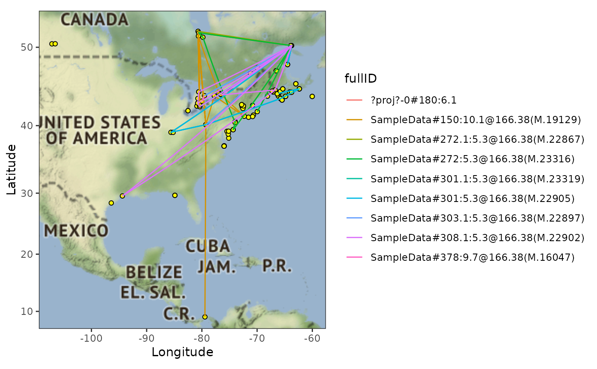

Google map of routes of Motus tag detections coloured by ID. User defines a date range to show points for receivers that were operational at some point during the date range.
Usage
plotRouteMap(
data,
zoom = 3,
lat = NULL,
lon = NULL,
maptype = "terrain",
recvStart = NULL,
recvEnd = NULL
)Arguments
- data
a .motus sql file
- zoom
Integer. Values between 3 and 21, 3 being continent level, 10 being city-scale
- lat
Numeric vector. Top and bottom latitude bounds. If NULL (default) this is calculated from the data
- lon
Numeric vector. Left and right longitude bounds. If NULL (default) this is calculated from the data
- maptype
Character. Map type to display, can be: "terrain" , "toner", "watercolor", or any other option available to
ggmap::get_stamenmap()- recvStart
Character. Start date for date range of active receivers. If
NULLuses the full data range- recvEnd
Character. End date for date range of active receivers. If
NULLuses the full data range
Examples
# You must use a .motus sql file, instructions to load using tagme() are
# below
# download and access data from project 176 in sql format
# usename and password are both "motus.sample"
if (FALSE) sql.motus <- tagme(176, new = TRUE, update = TRUE)
# OR use example sql file included in `motus`
sql.motus <- tagme(176, update = FALSE,
dir = system.file("extdata", package = "motus"))
# Plot routemap of all detection data, with "terrain" maptype, and receivers
# active between 2016-01-01 and 2017-01-01
plotRouteMap(sql.motus, recvStart = "2016-01-01", recvEnd = "2016-12-31")
#> Source : http://tile.stamen.com/terrain/3/1/2.png
#> Source : http://tile.stamen.com/terrain/3/2/2.png
#> Source : http://tile.stamen.com/terrain/3/1/3.png
#> Source : http://tile.stamen.com/terrain/3/2/3.png
